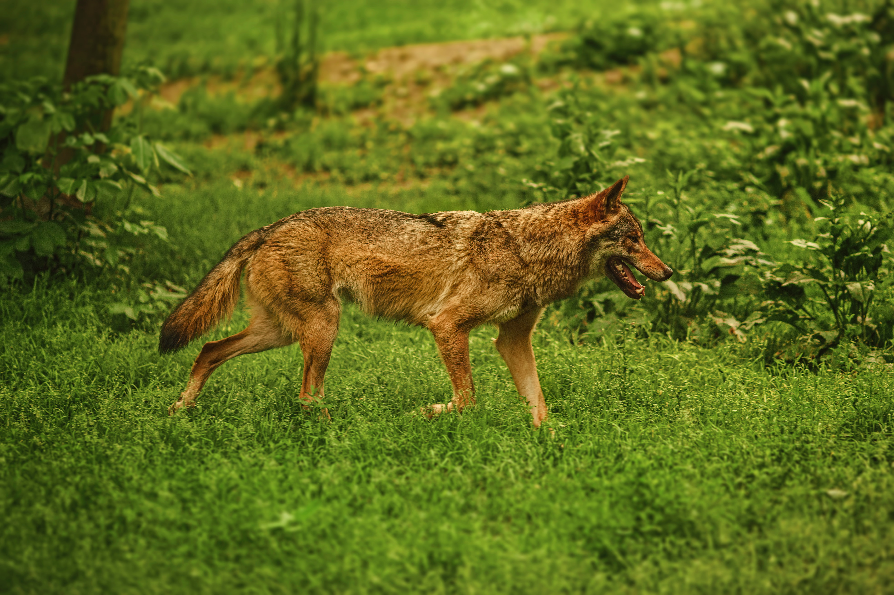

Kilde: Miljøstyrelsen
Ødelagt biodiversitet
50% af vores landareal i Danmark bliver brugt til at fodre 3 slags dyr: køer, grise og kyllinger. Mindre plads til den vilde natur, de vilde dyr og insekter.
"Mange arters levesteder er forsvundet eller forsvinder, bliver mindre eller forstyrres på grund af ændret arealanvendelse."
Udover det intensive brug af areal til landbrug, har vi også set en hetz bygge op imod vilde dyr i danmark, fra primært landbruget. Et eksempel er f.eks ulven & vildsvinet.